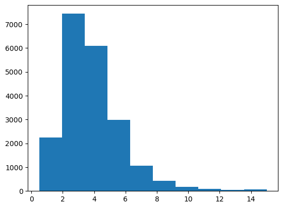
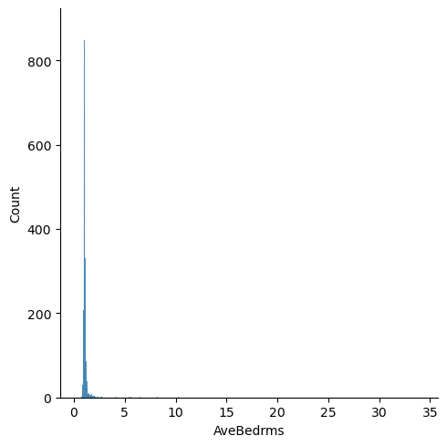

import numpy as np
import matplotlib.pyplot as plt
from sklearn.datasets import fetch_california_housing
cal_housing = fetch_california_housing(data_home='.')10 Housing Price Data Visualization In-Class Exercise
In this review notebook, we will review the basics of data visualization and the importance of this for being able to build performant ML models. It is also a good starting point for people to get used to Python and the use of Jupyter Notebooks. It is designed as an in-class (or on your own) exercise to get your feet wet in working with data. Specifically, in this notebook we will:
- Load the California Housing dataset
- Build some basic visualizations of the dataset
- Interpret the visualizations and discuss what they mean for building ML models
The below code is a useful starting point that should get you started with exploring the California Housing data.
print(cal_housing.DESCR).. _california_housing_dataset:
California Housing dataset
--------------------------
**Data Set Characteristics:**
:Number of Instances: 20640
:Number of Attributes: 8 numeric, predictive attributes and the target
:Attribute Information:
- MedInc median income in block group
- HouseAge median house age in block group
- AveRooms average number of rooms per household
- AveBedrms average number of bedrooms per household
- Population block group population
- AveOccup average number of household members
- Latitude block group latitude
- Longitude block group longitude
:Missing Attribute Values: None
This dataset was obtained from the StatLib repository.
https://www.dcc.fc.up.pt/~ltorgo/Regression/cal_housing.html
The target variable is the median house value for California districts,
expressed in hundreds of thousands of dollars ($100,000).
This dataset was derived from the 1990 U.S. census, using one row per census
block group. A block group is the smallest geographical unit for which the U.S.
Census Bureau publishes sample data (a block group typically has a population
of 600 to 3,000 people).
A household is a group of people residing within a home. Since the average
number of rooms and bedrooms in this dataset are provided per household, these
columns may take surprisingly large values for block groups with few households
and many empty houses, such as vacation resorts.
It can be downloaded/loaded using the
:func:`sklearn.datasets.fetch_california_housing` function.
.. rubric:: References
- Pace, R. Kelley and Ronald Barry, Sparse Spatial Autoregressions,
Statistics and Probability Letters, 33 (1997) 291-297
cal_housing.targetarray([4.526, 3.585, 3.521, ..., 0.923, 0.847, 0.894])X = cal_housing.data
avg_price = cal_housing.target
feature_names = cal_housing.feature_names
feature_names['MedInc',
'HouseAge',
'AveRooms',
'AveBedrms',
'Population',
'AveOccup',
'Latitude',
'Longitude']X[:,0]array([8.3252, 8.3014, 7.2574, ..., 1.7 , 1.8672, 2.3886])cal_housing.targetarray([4.526, 3.585, 3.521, ..., 0.923, 0.847, 0.894])plt.scatter(X[:,0],cal_housing.target, alpha=0.1)
plt.xlabel("Median Income")
plt.ylabel("House Price")Text(0, 0.5, 'House Price')Some people might find it useful to use a Pandas dataframe to manipulate the data, but that is not really required for basic plotting and visualization:
import pandas as pd
df=pd.DataFrame(np.hstack([X,avg_price[:,np.newaxis]]),columns=np.hstack([feature_names,'price']))
#Example of the first few rows of data (using the "head" command)
df| MedInc | HouseAge | AveRooms | AveBedrms | Population | AveOccup | Latitude | Longitude | price | |
|---|---|---|---|---|---|---|---|---|---|
| 0 | 8.3252 | 41.0 | 6.984127 | 1.023810 | 322.0 | 2.555556 | 37.88 | -122.23 | 4.526 |
| 1 | 8.3014 | 21.0 | 6.238137 | 0.971880 | 2401.0 | 2.109842 | 37.86 | -122.22 | 3.585 |
| 2 | 7.2574 | 52.0 | 8.288136 | 1.073446 | 496.0 | 2.802260 | 37.85 | -122.24 | 3.521 |
| 3 | 5.6431 | 52.0 | 5.817352 | 1.073059 | 558.0 | 2.547945 | 37.85 | -122.25 | 3.413 |
| 4 | 3.8462 | 52.0 | 6.281853 | 1.081081 | 565.0 | 2.181467 | 37.85 | -122.25 | 3.422 |
| ... | ... | ... | ... | ... | ... | ... | ... | ... | ... |
| 20635 | 1.5603 | 25.0 | 5.045455 | 1.133333 | 845.0 | 2.560606 | 39.48 | -121.09 | 0.781 |
| 20636 | 2.5568 | 18.0 | 6.114035 | 1.315789 | 356.0 | 3.122807 | 39.49 | -121.21 | 0.771 |
| 20637 | 1.7000 | 17.0 | 5.205543 | 1.120092 | 1007.0 | 2.325635 | 39.43 | -121.22 | 0.923 |
| 20638 | 1.8672 | 18.0 | 5.329513 | 1.171920 | 741.0 | 2.123209 | 39.43 | -121.32 | 0.847 |
| 20639 | 2.3886 | 16.0 | 5.254717 | 1.162264 | 1387.0 | 2.616981 | 39.37 | -121.24 | 0.894 |
20640 rows × 9 columns
# Below is how you might select only some columns from a dataframe.
# This is just an illustrative example; you could select other columns
subdf = df[['MedInc','HouseAge','AveRooms','AveBedrms','Population','AveOccup','price']]
subdf.head()| MedInc | HouseAge | AveRooms | AveBedrms | Population | AveOccup | price | |
|---|---|---|---|---|---|---|---|
| 0 | 8.3252 | 41.0 | 6.984127 | 1.023810 | 322.0 | 2.555556 | 4.526 |
| 1 | 8.3014 | 21.0 | 6.238137 | 0.971880 | 2401.0 | 2.109842 | 3.585 |
| 2 | 7.2574 | 52.0 | 8.288136 | 1.073446 | 496.0 | 2.802260 | 3.521 |
| 3 | 5.6431 | 52.0 | 5.817352 | 1.073059 | 558.0 | 2.547945 | 3.413 |
| 4 | 3.8462 | 52.0 | 6.281853 | 1.081081 | 565.0 | 2.181467 | 3.422 |
For the below tasks, you might want to try out some basic Python plotting libraries. I recommend:
- Matplotlib: Fairly basic building block, but gets the job done, and widely used. This is the most complicated option, but gives you the most control.
- Bokeh: Fancier interactive graphs with scrolling. Fairly easy to use.
- Seaborn: Probably the easiest to use to produce basic, common graphs and statistics.
If you aren’t familiar with any of the above libraries, I would suggest starting with Seaborn, since it hides many of the complex features you might not need right away (check out their tutorial). Bokeh also has a nice Quick Start guide if you like having the ability to pan/zoom the data.
# Matplotlib plotting example
# Below line tells the notebook to plots the images here
# in the notebook, rather than separately as image files.
%matplotlib inline
import matplotlib.pyplot as plt
plt.hist(df['MedInc'])(array([2247., 7436., 6098., 2990., 1060., 428., 178., 93., 47.,
63.]),
array([ 0.4999 , 1.94992, 3.39994, 4.84996, 6.29998, 7.75 ,
9.20002, 10.65004, 12.10006, 13.55008, 15.0001 ]),
<BarContainer object of 10 artists>)# Pandas Example- Uncomment below and run if you want
# Note, this is essentially just a shortcut to matplotlib
#df['MedInc'].hist()
# or
#df.plot(kind='scatter', x='MedInc', y='price')# Seaborn Example - Uncomment below and run if you want
import seaborn as sns
# Note, just importing seaborn changes the matplotlib default behavior
plt.figure()
sns.displot(df['MedInc'])
plt.show()

10.1 Exercise 1: Visualize the relationship between features and price
Visualize the 2D relationship between housing prices and the provided features of the data. You can choose how you want to do this.
[Enter your code into the empty cell below to create the necessary visualizations. You can create multiple cells for code or Markdown code if that helps you.]
features = ['MedInc','HouseAge','AveRooms','AveBedrms','Population','AveOccup']
for i,feature in enumerate(features):
plt.figure()
sns.jointplot(x=df[feature],y=df['price'],alpha=0.1)
plt.show()<Figure size 640x480 with 0 Axes><Figure size 640x480 with 0 Axes><Figure size 640x480 with 0 Axes><Figure size 640x480 with 0 Axes><Figure size 640x480 with 0 Axes><Figure size 640x480 with 0 Axes>Question: Do any of the features appear linearly correlated with price?
10.2 Exercise 2: Visualize the relationships between features
Visualize the 1D and 2D relationships between the features in the dataset. For example, how are house ages distributed? What is the relationship between house age and the number of bedrooms? Feel free to explore different 1D and 2D options.
for feature in features:
plt.figure()
sns.displot(df[feature])
plt.show()<Figure size 640x480 with 0 Axes><Figure size 640x480 with 0 Axes><Figure size 640x480 with 0 Axes><Figure size 640x480 with 0 Axes>
<Figure size 640x480 with 0 Axes><Figure size 640x480 with 0 Axes># Plot the pairwise distributions between each of the features:
for i,feature in enumerate(features):
for j,feature2 in enumerate(features):
if j>i:
plt.figure()
sns.jointplot(x=df[feature],y=df[feature2],alpha=1.0)
plt.show()<Figure size 640x480 with 0 Axes><Figure size 640x480 with 0 Axes><Figure size 640x480 with 0 Axes><Figure size 640x480 with 0 Axes><Figure size 640x480 with 0 Axes><Figure size 640x480 with 0 Axes><Figure size 640x480 with 0 Axes><Figure size 640x480 with 0 Axes><Figure size 640x480 with 0 Axes><Figure size 640x480 with 0 Axes><Figure size 640x480 with 0 Axes>
<Figure size 640x480 with 0 Axes><Figure size 640x480 with 0 Axes><Figure size 640x480 with 0 Axes><Figure size 640x480 with 0 Axes>Question: Are there any anomalies that look strange in the data, and which visualization helped you identify them (hint: there should be several)?
10.3 Exercise 3: Visualize relationships with the Anomalies Removed
Using your knowledge of the anomalies you found above, remove those anomalies using appropriate code below (either by removing the entire data record, or just the specific values that were anomalous, if you prefer to be more surgical) and replot the Task 1 and Task 2 plots you produced above.
# Code goes here for dealing with outliers
# You can copy/paste some of your plotting code from above, if that is helpful.Question: Does this change your answer to the original Task 1 or Task 2 questions?